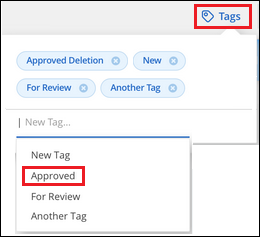
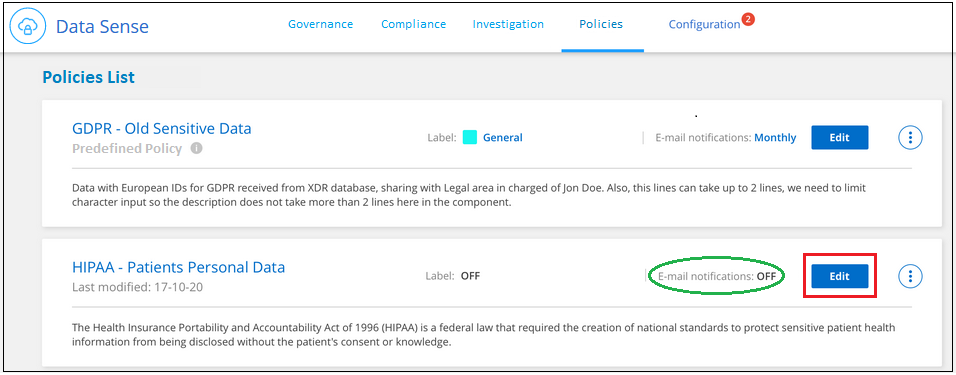
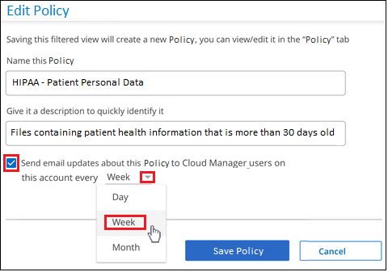
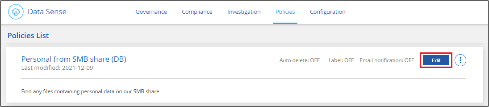

请求文档变更
请求文档变更 在 GitHub 上编辑
在 GitHub 上编辑 提供者指南
提供者指南组织私有数据
Cloud Data sense 为您提供了多种管理和组织私有数据的方式。这样可以更轻松地查看对您最重要的数据。
-
如果您已订阅 "Azure 信息保护（ AIP ）" 要对文件进行分类和保护，您可以使用 Cloud Data sense 管理这些 AIP 标签。
-
您可以将标记添加到要标记用于组织或某种类型的跟进的文件中。
-
您可以将一个 Cloud Manager 用户分配给一个特定文件或多个文件，以便此用户可以负责管理此文件。
-
使用 " 策略 " 功能，您可以创建自己的自定义搜索查询，以便通过单击一个按钮轻松查看结果。
-
当某些关键策略返回结果时，您可以向 Cloud Manager 用户发送电子邮件警报。

|
只有在选择对数据源执行完整分类扫描后，才可以使用本节所述的功能。已执行仅映射扫描的数据源不会显示文件级详细信息。 |
是否应使用标记或标签？
以下是对数据感知标记和 Azure 信息保护标记的比较。
| Tags | 标签 |
|---|---|
文件标记是 Data sense 的一个集成部分。 |
要求您已订阅 Azure 信息保护（ AIP ）。 |
此标记仅保留在 Data sense 数据库中，不会写入到文件中。它不会更改文件或文件访问或修改时间。 |
此标签是文件的一部分，当此标签发生更改时，此文件将发生更改。此更改还会更改文件的访问和修改时间。 |
一个文件可以包含多个标记。 |
一个文件可以有一个标签。 |
此标记可用于内部数据感知操作，例如复制，移动，删除，运行策略， 等 |
可以读取文件的其他系统可以看到标签，可用于实现额外的自动化。 |
仅使用一个 API 调用来查看文件是否具有标记。 |
使用 AIP 标签对数据进行分类
如果您已订阅，则可以管理 Cloud Data sense 正在扫描的文件中的 AIP 标签 "Azure 信息保护（ AIP ）"。AIP 允许您通过将标签应用于内容来对文档和文件进行分类和保护。使用 Data sense ，您可以查看已分配给文件的标签，向文件添加标签以及在标签已存在时更改标签。
Cloud Data sense 支持以下文件类型中的 AIP 标签： .DOC ， .docx ， .PDF ， .PPTX ， .XLS ， .XLSX 。
|
|
|
在工作空间中集成 AIP 标签
在管理 AIP 标签之前，您需要通过登录到现有 Azure 帐户将 AIP 标签功能集成到 Cloud Data sense 中。启用后，您可以管理所有文件中的 AIP 标签 "工作环境和数据源" 在 Cloud Manager 工作空间中。
-
您必须拥有帐户和 Azure 信息保护许可证。
-
您必须具有 Azure 帐户的登录凭据。
-
如果您计划更改 Amazon S3 存储分段中文件的标签，请确保 IAM 角色中包含权限
s 3 ： PutObject。请参见 "设置 IAM 角色"。
-
在 "Cloud Data sense Configuration" 页面中，单击 * 集成 AIP 标签 * 。

-
在集成 AIP 标签对话框中，单击 * 登录到 Azure* 。
-
在显示的 Microsoft 页面中，选择帐户并输入所需的凭据。
-
返回到 Cloud Data sense 选项卡，您将看到消息 "AIP Labels were successfully Integrated with the account <account_name>" 。
-
单击 * 关闭 * ，您将在页面顶部看到文本 _AIP Labels Integrated _ 。

您可以从调查页面的结果窗格中查看和分配 AIP 标签。您还可以使用策略为文件分配 AIP 标签。
查看文件中的 AIP 标签
您可以查看分配给文件的当前 AIP 标签。
在数据调查结果窗格中，单击  文件以展开文件元数据详细信息。
文件以展开文件元数据详细信息。

手动分配 AIP 标签
您可以使用 Cloud Data sense 在文件中添加，更改和删除 AIP 标签。
按照以下步骤为单个文件分配 AIP 标签。
-
在数据调查结果窗格中，单击
 文件以展开文件元数据详细信息。
文件以展开文件元数据详细信息。
-
单击 * 为此文件分配标签 * ，然后选择此标签。
此标签将显示在文件元数据中。
为多个文件分配 AIP 标签：
-
在数据调查结果窗格中，选择要标记的一个或多个文件。

-
要选择单个文件，请选中每个文件（
 ）。
）。 -
要选择当前页面上的所有文件，请选中标题行（
 ）。
）。
-
-
从按钮栏中，单击 * 标签 * 并选择 AIP 标签：

AIP 标签将添加到所有选定文件的元数据中。
使用策略自动分配 AIP 标签
您可以为符合策略标准的所有文件分配 AIP 标签。您可以在创建策略时指定 AIP 标签，也可以在编辑任何策略时添加此标签。
在 Cloud Data sense 扫描文件时，标签会在文件中持续添加或更新。
根据标签是否已应用于文件以及标签的分类级别，更改标签时会执行以下操作：
| 如果文件 … | 那么 … |
|---|---|
无标签 |
此时将添加此标签 |
具有较低分类级别的现有标签 |
此时将添加更高级别的标签 |
具有较高级别分类的现有标签 |
较高级别的标签将保留 |
手动和通过策略为其分配一个标签 |
此时将添加更高级别的标签 |
通过两个策略为其分配两个不同的标签 |
此时将添加更高级别的标签 |
按照以下步骤向现有策略添加 AIP 标签。
-
在策略列表页面中，单击要添加（或更改） AIP 标签的策略的 * 编辑 * 。

-
在编辑策略页面中，选中复选框为与策略参数匹配的文件启用自动标签，然后选择标签（例如 * 常规 * ）。

-
单击 * 保存策略 * ，此标签将显示在策略问题描述中。
|
|
如果为某个策略配置了标签，但此后已从 AIP 中删除了该标签，则该标签名称将变为关闭，并且不再分配该标签。 |
删除 AIP 集成
如果您不再希望能够管理文件中的 AIP 标签，则可以从云数据感知界面中删除 AIP 帐户。
请注意，您使用 Data sense 添加的标签不会进行任何更改。文件中存在的标签将保持当前存在的状态。
-
从 Configuration 页面中，单击 * 集成 AIP 标签 > 删除集成 * 。

-
从确认对话框中单击 * 删除集成 * 。
应用标记以管理扫描的文件
您可以向要标记为某种类型的跟进的文件添加标记。例如，您可能已发现一些重复文件，并且希望删除其中一个文件，但需要检查应删除哪个文件。您可以向文件添加一个标记 "Check to delete" ，以使您知道此文件需要进行一些研究并在未来执行某种类型的操作。
使用 Data sense ，您可以查看分配给文件的标记，在文件中添加或删除标记，以及更改名称或删除现有标记。
请注意，标记添加到文件中的方式与 AIP 标签是文件元数据的一部分不同。使用 Cloud Data sense 的 Cloud Manager 用户可以看到此标记，因此您可以查看是否需要删除文件或检查文件以进行某种类型的跟进。

|
在 Cloud Data sense 中分配给文件的标记与您可以添加到资源（例如卷或虚拟机实例）的标记无关。数据感知标记在文件级别应用。 |
查看应用了特定标记的文件
您可以查看已分配特定标记的所有文件。
-
单击 Cloud Data sense 中的 * 调查 * 选项卡。
-
在数据调查页面中，单击筛选器窗格中的 * 标记 * ，然后选择所需的标记。

" 调查结果 " 窗格将显示已分配这些标记的所有文件。
为文件分配标记
您可以向单个文件或一组文件添加标记。
向单个文件添加标记：
-
在数据调查结果窗格中，单击
文件以展开文件元数据详细信息。 -
单击 * 标记 * 字段，此时将显示当前已分配的标记。
-
添加一个或多个标记：
-
要分配现有标记，请单击 * 新标记 …* 字段，然后开始键入标记的名称。出现要查找的标记时，请选择该标记并按 * 输入 * 。
-
要创建新标记并将其分配给文件，请单击 * 新标记 …* 字段，输入新标记的名称，然后按 * 输入 * 。

此标记将显示在文件元数据中。
-
向多个文件添加标记：
-
在数据调查结果窗格中，选择要标记的一个或多个文件。
-
要选择单个文件，请选中每个文件（
）。 -
要选择当前页面上的所有文件，请选中标题行（
）。
-
-
在按钮栏中，单击 * 标记 * ，此时将显示当前已分配的标记。
-
添加一个或多个标记：
-
要分配现有标记，请单击 * 新标记 …* 字段，然后开始键入标记的名称。出现要查找的标记时，请选择该标记并按 * 输入 * 。
-
要创建新标记并将其分配给文件，请单击 * 新标记 …* 字段，输入新标记的名称，然后按 * 输入 * 。

-
-
批准在确认对话框中添加标记，标记将添加到所有选定文件的元数据中。
从文件中删除标记
如果不再需要使用某个标记，可以将其删除。
只需单击现有标记的 * x * 即可。

如果选择了多个文件，则标记将从所有文件中删除。
分配用户以管理某些文件
您可以将一个 Cloud Manager 用户分配给一个特定文件或多个文件，以便此用户可以负责对该文件执行任何后续操作。此功能通常与功能结合使用，用于向文件添加自定义状态标记。
例如，您的文件可能包含某些个人数据，这些数据允许过多的用户进行读写访问（打开权限）。因此，您可以将状态标记 " 更改权限 " 并将此文件分配给用户 "Joan Smith" ，以便用户确定如何修复问题描述。修复问题描述后，他们可以将状态标记更改为 " 已完成 " 。
请注意，用户名不会作为文件元数据的一部分添加到文件中， Cloud Manager 用户只会在使用 Cloud Data sense 时看到此用户名。
通过 " 调查 " 页面中的新筛选器，您可以轻松查看 " 已分配给 " 字段中具有相同人员的所有文件。
要将用户分配给单个文件，请执行以下操作：
-
在数据调查结果窗格中，单击
文件以展开文件元数据详细信息。 -
单击 * 已分配给 * 字段并选择用户名。

用户名显示在文件元数据中。
要将用户分配给多个文件，请执行以下操作：
-
在数据调查结果窗格中，选择要分配给用户的一个或多个文件。
-
要选择单个文件，请选中每个文件（
）。 -
要选择当前页面上的所有文件，请选中标题行（
）。
-
-
从按钮栏中，单击 * 分配给 * 并选择用户名：

用户将添加到所有选定文件的元数据中。
使用策略控制数据
策略类似于自定义筛选器的收藏夹列表，可在 " 调查 " 页面中为常见请求的合规性查询提供搜索结果。Cloud Data sense 可根据常见客户请求提供一组预定义策略。您可以创建自定义策略，为特定于您的组织的搜索提供结果。
策略提供以下功能：
-
预定义策略 基于用户请求从 NetApp 获得
-
能够创建自己的自定义策略
-
单击一下即可启动包含策略结果的调查页面
-
当某些关键策略返回结果时，向 Cloud Manager 用户发送电子邮件警报，以便您可以获得保护数据的通知
-
将 AIP （ Azure 信息保护）标签自动分配给与策略中定义的标准匹配的所有文件
-
如果某些策略返回结果，则会自动删除文件（每天删除一次），以便您可以自动保护数据
合规性信息板中的 * 策略 * 选项卡列出了此 Cloud Data sense 实例上可用的所有预定义和自定义策略。

此外，策略还会显示在 " 调查 " 页面的筛选器列表中。
在 " 调查 " 页面中查看策略结果
要在 " 调查 " 页面中显示策略的结果，请单击  按钮，然后选择 * 调查结果 * 。
按钮，然后选择 * 调查结果 * 。

创建自定义策略
您可以创建自己的自定义策略，为特定于您的组织的搜索提供结果。系统将返回与搜索条件匹配的所有文件和目录(共享和文件夹)的结果。
请注意、根据策略结果删除数据和分配AIP标签的操作仅对文件有效。不能自动删除符合搜索条件的目录或为其分配AIP标签。
-
在数据调查页面中，选择要使用的所有筛选器来定义搜索。请参见 "筛选 " 数据调查 " 页面中的数据" 了解详细信息。
-
按所需方式获取所有筛选器特征后，单击 * 从此搜索创建策略 * 。

-
为策略命名，然后选择可由策略执行的其他操作：
-
输入唯一名称和问题描述。
-
或者，选中此框可自动删除与策略参数匹配的文件。了解更多信息 "使用策略删除源文件"。
-
或者，如果您希望向 Cloud Manager 用户发送通知电子邮件，请选中此框，然后选择发送电子邮件的间隔。了解更多信息 "根据策略结果发送电子邮件警报"。
-
或者，选中此框可自动为与策略参数匹配的文件分配 AIP 标签，然后选择此标签。（仅当您已集成 AIP 标签时。了解更多信息 "AIP 标签"）
-
单击 * 创建策略 * 。

-
新策略将显示在策略选项卡中。
在发现不合规数据时发送电子邮件警报
当某些关键策略返回结果时， Cloud Data sense 可以向 Cloud Manager 用户发送电子邮件警报，以便您可以获得保护数据的通知。您可以选择每天，每周或每月发送电子邮件通知。
您可以在创建策略或编辑任何策略时配置此设置。
按照以下步骤向现有策略添加电子邮件更新。
-
在策略列表页面中，单击要添加（或更改）电子邮件设置的策略的 * 编辑 * 。

-
在编辑策略页面中，如果要向 Cloud Manager 用户发送通知电子邮件，请选中此框，然后选择发送电子邮件的间隔（例如，每 * 周 * ）。

-
单击 * 保存策略 * ，策略问题描述中将显示发送电子邮件的间隔。
现在，如果策略中有任何结果，则会发送第一封电子邮件，但前提是任何文件符合策略标准。通知电子邮件不会发送任何个人信息。此电子邮件指示存在与策略条件匹配的文件，并提供指向策略结果的链接。
编辑策略
您可以修改先前创建的现有策略的任何条件。如果要更改查询(使用筛选器定义的项)以添加或删除某些参数、则此功能尤其有用。
请注意、对于预定义策略、您只能修改是否发送电子邮件通知以及是否添加AIP标签。不能更改任何其他值。
-
在策略列表页面中、单击要更改的策略的*编辑*。

-
如果您只想更改此页面上的项(名称、问题描述 、是否发送电子邮件通知以及是否添加了AIP标签)、请进行更改并单击*保存策略*。
如果要更改已保存查询的筛选器、请单击*编辑查询*。
-
在定义该查询的调查页面中、通过添加、删除或自定义筛选器来编辑查询、然后单击*保存更改*。

策略将立即更改。为该策略定义的用于发送电子邮件、添加AIP标签或删除文件的任何操作都将在下一个内部发生。
正在删除策略
如果您不再需要创建的任何自定义策略，则可以将其删除。您无法删除任何预定义策略。
要删除策略，请单击 按钮，单击 * 删除策略 * ，然后在确认对话框中再次单击 * 删除策略 * 。
预定义策略列表
Cloud Data sense 提供了以下系统定义的策略：
| Name | Description | 逻辑 |
|---|---|---|
S3 公开公开的私有数据 |
包含个人或敏感个人信息的 S3 对象，具有开放的公有读取访问权限。 |
S3 公有 ，包含个人或敏感个人信息 |
PCI DSS — 30 天内的陈旧数据 |
包含信用卡信息的文件，上次修改时间为 30 天前。 |
包含信用卡，最后一次修改日期为 30 天 |
HIPAA — 30 天内过期的数据 |
包含运行状况信息的文件，上次修改时间超过 30 天。 |
包含运行状况数据（定义方式与 HIPAA 报告相同），最后修改时间为 30 天 |
私有数据—过期 7 年 |
包含个人或敏感个人信息的文件，上次修改时间为 7 年前。 |
包含个人或敏感个人信息的文件，上次修改时间为 7 年前 |
GDPR —欧洲公民 |
包含 5 个以上欧盟国家公民标识符的文件或包含欧盟国家公民标识符的数据库表。 |
包含 5 个以上的欧盟公民标识符的文件，或者包含超过 15% 列且具有一个国家或地区的欧盟标识符的行的数据库表。（欧洲国家 / 地区的任何一个国家 / 地区标识符。不包括巴西，加利福尼亚，美国 SSN ，以色列，南非） |
CCPA —加利福尼亚居民 |
包含 10 个以上加利福尼亚驱动程序许可证标识符的文件或包含此标识符的数据库表。 |
包含 10 个以上加利福尼亚驱动程序许可证标识符的文件或包含加利福尼亚驱动程序许可证的数据库表 |
数据主体名称—高风险 |
数据主题名称超过 50 个的文件。 |
数据主题名称超过 50 个的文件 |
电子邮件地址—高风险 |
电子邮件地址超过 50 个的文件，或者包含电子邮件地址的行数超过 50% 的数据库列 |
电子邮件地址超过 50 个的文件，或者包含电子邮件地址的行数超过 50% 的数据库列 |
个人数据—高风险 |
包含 20 个以上个人数据标识符的文件，或者包含个人数据标识符的行数超过 50% 的数据库列。 |
包含 20 个以上个人列的文件，或包含 50% 以上个人行的数据库列 |
敏感个人数据—高风险 |
包含 20 个以上敏感个人数据标识符的文件，或者包含敏感个人数据的行数超过 50% 的数据库列。 |
包含 20 多个敏感个人或数据库列的文件，其中 50% 以上的行包含敏感个人 |